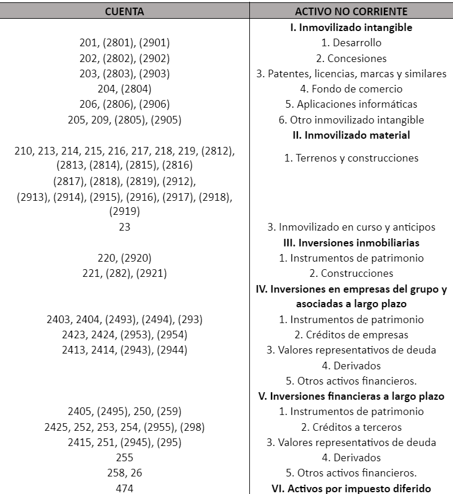
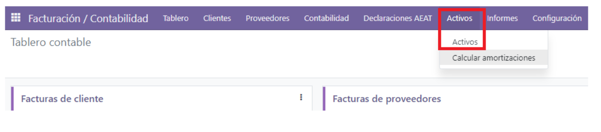
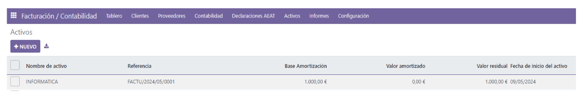
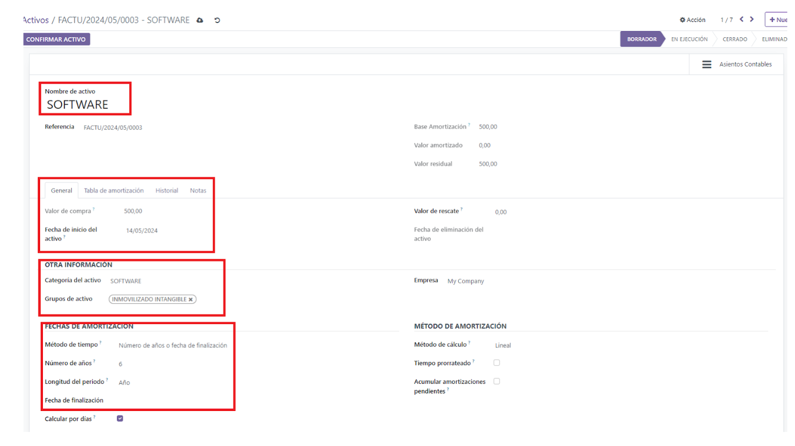
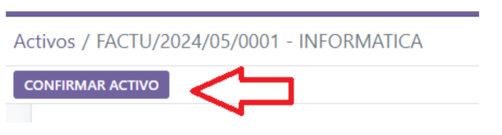
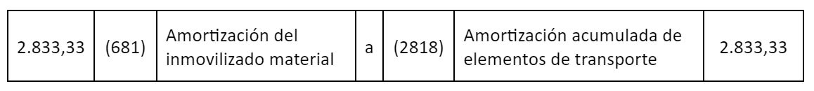
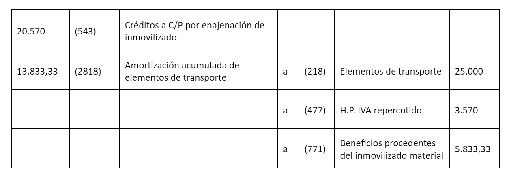
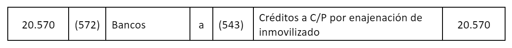

Activos no circulantes y fijos¶
Los activos son la parte más importante del negocio, ya que son la principal fuente de ingresos. Estos ingresos aumentan las ganancias y contribuyen al crecimiento de la empresa. Por lo tanto, es importante proporcionar una breve introducción para entender los activos y sus diferentes tipos, con el fin de diferenciarlos claramente.
Existen diferentes tipos de activos, los más comunes son corrientes, no corrientes, físicos, intangibles, operativos y no operativos. Para una empresa es fundamental identificar y clasificar de manera correcta los tipos de activos, de manera que pueda mantener su solvencia y controlar los ingresos que se asocian a ello.
Activos Fijos o Activos no corrientes¶
Los Activos No Corrientes son aquellos que no pueden ser convertidos con facilidad o rapidez en efectivo y equivalentes de efectivo. Por eso son también llamados Activos a Largo Plazo o activos tangibles o intangibles, que no pueden ser destinados para la venta, pero que son necesarios para un adecuado funcionamiento de la compañía. Podemos mencionar algunos:
Tierras o terrenos.
Edificios.
Maquinarias.
Equipos.
Patentes.
Marcas Registradas.
Mobiliario.
Transportes.
Otros activos.
Un activo tangible es aquel que tiene una presencia física y puede tocarse, un activo no tangible no tiene presencia física pero que tiene un valor económico para la empresa.
Cuentas que intervienen en el activo no corriente¶
Ejemplo de un inmovilizado de activo no corriente. Supongamos que una empresa adquiere un programa informático por 1.000 euros más IVA al tipo general y otros 300 euros por unos cursos de formación para que los empleados aprendan a utilizar dicho programa. La formación y reciclaje profesional están exentos de IVA.
Para la adquisición del software, contabilizamos la factura del programa informático: 1,000 (206) Aplicaciones Informáticas a (572) Bancos c/c 1,210 210 (472) IVA soportado (21% * 1,000)
Cómo hacer este asiento con Odoo¶
Supongamos que está parametrizado la categoría del activo (ver categorías del activo). En este caso, contabilizamos la factura (ver facturas proveedores) pero en el Debe en lugar de indicar una cuenta de gasto, se indica la cuenta del activo como en el ejemplo. Al grabar la factura, automáticamente se crearía el activo y lo veríamos así:
 Veremos que se ha creado el activo desde la factura. Entramos en el activo y tenemos que revisar todo lo que está enmarcado en rojo, que el nombre del activo sea el indicado (se puede editar), el valor de compra, la fecha de inicio (coge la fecha de la factura), muy importante la categoría del activo y el grupo de activo. El método de amortización, los años y la longitud, no se debe de cambiar, a no ser que se quiera acortar el plazo o que para ese activo, se quiera cambiar la longitud (mensual, trimestral o anual).
Si está todo, indicamos CONFIRMAR ACTIVO
Lo mismo ocurre con los activos del inmovilizado tangible. Puede ser que ocurra que haya una venta del inmovilizado, ya sea intangible o material.
Ejemplo de cómo contabilizar la venta de un inmovilizado material:
Antes de entrar en el proceso de contabilización propiamente dicho, es necesario tener claro el concepto de valor neto contable de un activo inmovilizado porque, como se verá, hay que utilizarlo. En este sentido, en la valoración de un elemento de un momento determinado hay que tener en cuenta la depreciación que ha experimentado. Por eso, el valor neto contable de un inmovilizado es la diferencia entre su valor de adquisición y su amortización acumulada.
Pongamos un ejemplo.
Se compró un vehículo por valor de 10,000 euros que se amortiza anualmente al 12% (1,200 euros cada año). Su valor neto al cabo de 6 años será de 2,800 euros, que es el resultado de restas el valor de adquisición (10,000 euros) y su amortización acumulada durante 6 años (7,200 euros).
Cuentas contables específicas. Además de la propia del inmovilizado y la de su amortización acumulada, las principales cuentas contables que se utilizan son: 1.- Para reflejar el beneficio de la operación:
770 Beneficios procedentes del inmovilizado intangible 771 Beneficios procedentes del inmovilizado material 2.- Para anotar la pérdida producida en la operación. 670 Pérdidas procedentes del inmovilizado intangible. 671 Pérdidas procedentes del inmovilizado material. 3.- Para registrar las cantidades pendientes de cobro: 253 Créditos a largo plazo por enajenación de inmovilizado. 543 Créditos a corto plazo por enajenación de inmovilizado.
Vamos con los pasos¶
Paso 1¶
Hacer el asiento de amortización del bien por la parte que corresponda a la fecha de la venta. Si la venta se produce el 31 de mayo, por ejemplo, habría que hacer el asiento de la amortización por los 5 meses que forma parte del patrimonio de la sociedad y el importe sería 500 euros (resultado de dividir 1.200 entre 12 y multiplicarlo por 5).
Paso 2¶
Calcularemos el valor neto contable del inmovilizado que se vende. Valor Neto = Precio de adquisición – amortización acumulada. En nuestro ejemplo será de 2.800 euros. 10.000 – 7.200 = 2.800 euros valor neto.
Paso 3¶
Determinar si la operación se genera una pérdida o un beneficio. Para ello habrá que calcular la diferencia entre el valor neto contable y el precio de venta. Si el vehículo se vende por 5.000 euros, la empresa obtendrá un beneficio de 2.200 euros en la operación (5.000 – 2.800). Si, por el contrario, el precio de venta es de 1.400 euros se producirá una pérdida de 1.400 euros (1.400 – 2.800).
Paso 4¶
Hacer el asiento contable, teniendo en cuenta que:
Hay que dar de baja tanto la cuenta de inmovilizado que se vende como la de su amortización acumulada. Hay que contabilizar el beneficio o la pérdida de la operación utilizando la cuenta que corresponda según se trate de un inmovilizado material o intangible.
Example
Imaginemos que nuestra empresa vende un vehículo que compró hace unos años y que figura en contabilidad con un precio de adquisición de 25.000€. Se amortiza al 16% anual y la amortización acumulada a 31 de diciembre del año anterior asciende a 11.000 euros. El precio de venta es de 17.000 euros más 21% de IVA, lo que da un total de 20.570 euros que se cobran por transferencia el día de la operación.
Los cálculos a realizar son: 1.- El importe de amortización que corresponde realizar a 15 de diciembre: 25.000 x 16% = 4.000 euros/ año 4.000/ 12 x 8,5 (meses entre enero y 15 de septiembre) = 2.833,33 euros. 2.- El beneficio o pérdida de la operación: Valor Neto contable = valor de adquisición – amortización acumulada. Valor Neto contable = 25.000 – 13.833,33 = 11.166,67 euros (La amortización acumulada es el resultado de sumar los 11.000 que ya traía del ejercicio anterior y los 2.833,33 del año actual). Si el precio de venta (17.000 euros) le restamos el valor neto contable (11.166,67) tenemos que la empresa ha ganando 5.833,33 euros en la operación
Por lo tanto, esto son los asientos contables que se deberían realizar:
1.- Por la amortización desde el 1 de enero hasta el día 15 de septiembre:
2.- Por el asiento de venta:
3.- Por el cobro
Por ejemplo, Ver tabla de amortización por coeficiente AEAT.